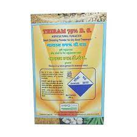
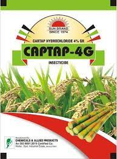
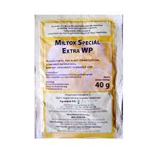
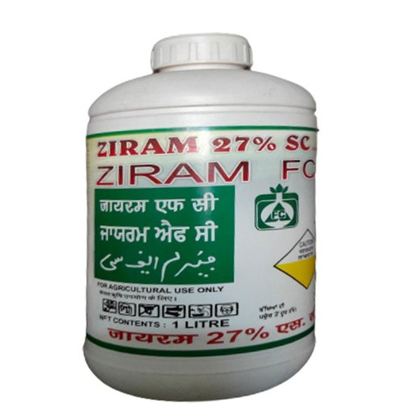

Prevention
- Use of disease-free seeds is important in preventing the disease.
- Seed treatment with Thiram or Captan 4g/kg is found to be effective in eliminating the seed-borne inoculum.
- Good control of the disease has been reported by three sprayings with Ziram O. 25% Captan 0.2% or miltox 0.2%.

Thiram |

Captan 4g |

miltox |

Ziram |